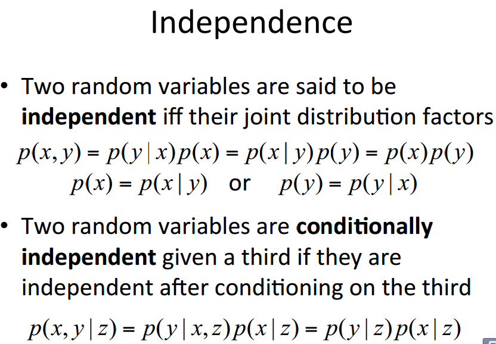

Machine Learning Tutorial (I) Probability Review
(Ray) Shirui Lu
Probability vs Statistics
- Probability: using models to predict data.
- Statistics: given dataset, "guessing" the model.
Basic Notations of Probability
Notations
- random variable X denotes something about which we are uncertain.
Examples:
- X1 = The gender of a randomly drawn person from our class.
- X2 = The temperature of HK at 11 am. tomorrow.
- p(x) denotes Prob(X=x).
- Sample Space the space of all possible outcomes.
Examples:
- SX1 -> {"female", "male"}; (discrete)
- SX2 -> Reals; (continuous)
- and also mixed;
Properties of p(x)
- p(x) is known as probability density function
- \(\forall x, p(x) \ge 0\)
- \(\int_{-\infty}^{\infty} p(x)~dx = 1\)
- Joint Probability Distribution
- \(p(x, y)\)
- Probability of \(X=x\) and \(Y=y\)
- Conditional Probability Distribution
- \(p(x|y)\)
- Probability of \(X=x\) when given \(Y=y\)
Exercises on Joint Probability Distribution and Conditional Probability
Exercises on Joint Probability Distribution
- Joint Probability Distribution
- \(p(x_1=R, x_2=R) = ?\)
- Chain Rule
- \(= P(R,R)\)
\(= P(x_2=R|x_1=R)P(x_1=R)\)
\(= (2/7)*(3/8)=3/28\)
Exercises on Conditional Probability
- Conditional Probability Distribution
- \(p(x_2=R | x_1=R) = (3/28)/((3/28)+(15/56)) = (2/7)\)
- Marginalization \(p(x_1=R) = p(R,R)+p(R,B) = (3/28)+(15/56) = 3/8\)
Sum Rule (Marginalization) and Chain Rule
Bayes' Rule
- \(p(x)\) is called "prior".
- \(p(x | y)\) is called "posterior".
Independence and Conditional Independence

Exercises on Independence

Continuous Case

Mean and Variance
- Mean
- understanding Mean: COM in physics
- Variance
Exercises on Mean and Variance
Gaussian Distribution

Maxium Likelihood Estimation
Maxium Likelihood Estimation for a 1D Gaussian
Maxium Likelihood Estimation for a 1D Gaussian
Acknowledgement
- A lot of materials used in these slides are extracted from Prof. Richard Zemel's slides, and Prof. Tom Mitchell's slides.